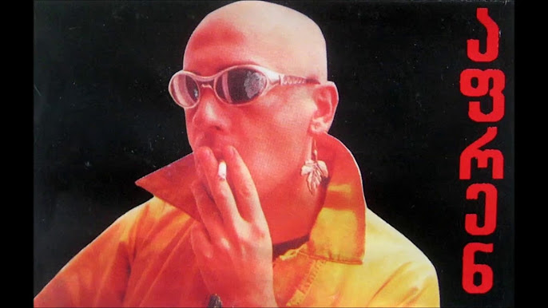

ირაკლის მონაწილეობით შემდგარი სხვა პროექტები იყო:
ელეტრონულ-ალტერნატიული ჯგუფი Childrens Medicine (საბავშვო მედიცინა) (1991-1992);
Georgian Dance Empire (1993, ელექტრონული მუსიკა);
Daira (1997) - პროექტი, რომელიც ლივერპულში მოქმედებდა და რომელშიც
მონაწილეობდნენ ირაკლი და დადა დადიანი.
ირაკლის პირველი სოლო-გამოჩენის მაუწყებელი იყო სიმღერა "War is Over".
მისი პირველი სოლო-დისკი, Svan Songs ჩაიწერა და გამოიცა 1993 წელს (გერმანია).
ეს მნიშვნელოვანი სოლო-დებიუტი იყო და დღემდე ითვლება
90-იანებში ჩაწერილი ქართულენოვანი ალტერნატიული დისკების ერთ-ერთ მთავარ ნიმუშად.
1997 წელს გამოიცა მუსიკოსის მეორე სტუდიური ალბომი აფრენ. 1999 წელს გამოჩნდა სიმღერა საქართველო,
2000 წელს შემდეგი დამოუკიდებელი სიმღერა უსაფრთხოება. ირაკლის მორიგი სტუდიური დისკი ამო გამოჩნდა 2001 წელს.
ეს ალბომი ცნობილია სიმღერებით სექსი და ორღანი78 .
2004 წელს გამოჩნდა ალბომი სავსე, რომელიც დაემთხვა ირაკლის შემოქმედების თაყვანისმცემელთა ახალი ტალღის გამოჩენას.
ამ დისკიდან ყველაზე ცნობილი სიმღერებია ვიცი რომ, აქ ხარ და ნანასი.
ეს პერიოდი აგრეთვე გამოირჩევა ირაკლის შემოქმედებითი აქტიურობით
შინაურ სტუდიაში იგი მუშაობდა ბევრ ახალ სიმღერაზე და, პარალელურად,
საკმაოდ ხშირად იღებდა ახალ ვიდეოკლიპებს საკუთარ სიმღერებზე.
აქვე აღსანიშნავია, რომ ამ პერიოდიდან მან საკუთარ ფსევდონიმად მეფე აირჩია.
